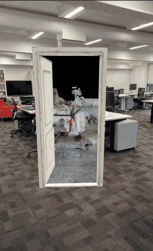
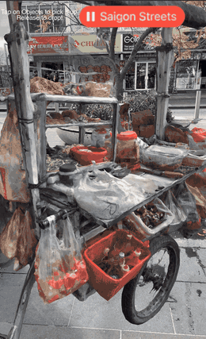
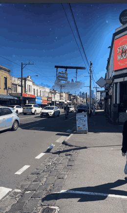

Street vendors of Ho Chi Minh City: site-specific AR prototypes
Three augmented reality prototypes from doctoral research by Quynh Nhu Bui (RMIT University) on the ethics of digitising Vietnamese street vending. Each places a reconstructed vendor environment within a Vietnamese neighbourhood of Melbourne. Open a prototype on a phone and allow camera and motion access when asked.
-

Portal to Saigon
A doorway that opens onto a Gaussian splat reconstruction of a tofu vendor's cart.
Open Portal to Saigon -

The Vendor Cart as Sensory Assemblage, Footscray
A vendor cart assembled from food, stools and objects that respond to touch, with its soundscape.
Open the Footscray prototype -

Nostalgia in Little Saigon, Richmond
A reconstructed vendor presence placed among the shopfronts of Victoria Street, Richmond.
Open the Richmond prototype
About the project
The vendor environments were documented in Ho Chi Minh City with each vendor's consent; faces and other identifying details are excluded. Field notes, the twelve reconstructions and the project's documentation are at vietnam3dheritage.myportfolio.com. These prototypes were first published on 8th Wall and moved here so that they remain accessible after 8th Wall's hosting service ends on 28 February 2027.
Licences and credits
The 3D reconstructions, sound and design of these prototypes are by Quynh Nhu Bui and are licensed under Creative Commons Attribution-NonCommercial 4.0.
The prototypes run on the 8th Wall XR Engine, created by Niantic Spatial, Inc. and copyright Niantic Spatial, Inc. It is used unmodified under the 8th Wall XR Engine License Agreement, and is provided "as is", without warranty of any kind, as set out in that agreement. The 8th Wall runtime is copyright 2025 Niantic Spatial, Inc. and is used under its MIT licence. This project is not connected with, sponsored or endorsed by Niantic Spatial.